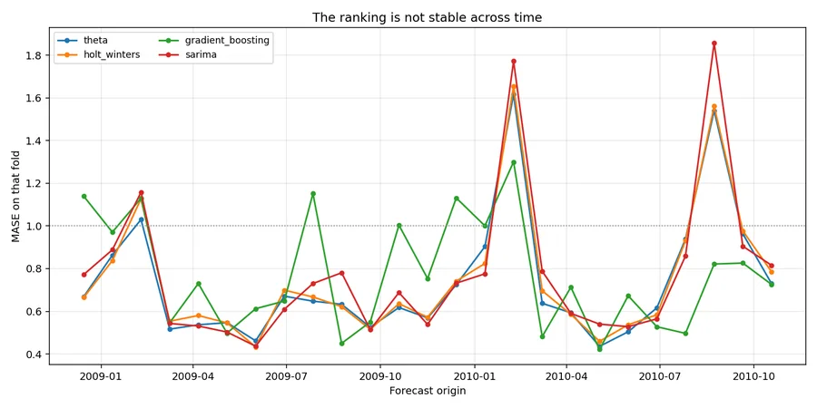
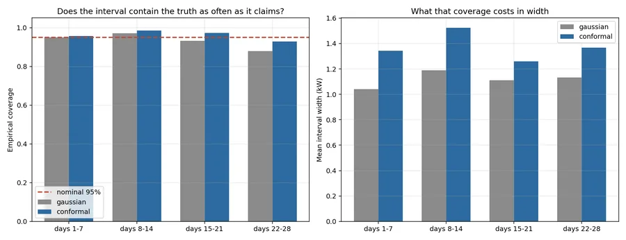

Energy · time series · backtesting
Demand Forecasting
A forecasting method from 2000 beat gradient boosting — while fitting 590× faster.

Forecasts have to be evaluated the way they will be used: refitted at successive origins, scored against baselines that are hard to beat, with prediction intervals whose coverage is measured rather than asserted.
Eight models were refitted at each of 25 expanding-window origins, forecasting 28 days every time. Fitting once on everything and slicing the predictions is the standard way to leak the future into a backtest.
A single holdout would have picked a different model
The same eight models, scored once on the final 28 days instead of across 25 folds:
| Backtest (25 folds) | Final holdout (once) | |
|---|---|---|
| 1st | Theta (0.738) | SARIMA (0.686) |
| 2nd | Holt-Winters | Seasonal mean |
| 3rd | Gradient boosting | Theta (0.810) |
| Last | Drift (0.986) | Seasonal naive (1.167) |
Seasonal naive comes last on the holdout and sixth of eight in the backtest. SARIMA comes first on the holdout and fourth across folds.
Pick your model from one split and you are choosing on the strength of one arbitrary month. This project exists to show the size of that difference, which is why the holdout is reported alongside the backtest and not instead of it.
The best model on average wins the fewest folds
Gradient boosting wins 8 of 25 folds — more than any other model — and still finishes third overall. Theta wins only 4 and finishes first.
Gradient boosting is high-variance: when it is right it is clearly right, and when it is wrong it is wrong by enough to lose the average. That is a genuinely different property from "worse", and a mean would have hidden it entirely.
For an operational forecast the consistent model is usually the right choice; for an ensemble, the volatile one may still earn its place.

The Gaussian interval under-covers, and it gets worse with horizon
Both interval methods are calibrated only on folds strictly earlier than the one being scored, so this coverage is genuinely out-of-sample.
| Method | Nominal | Empirical | Mean width |
|---|---|---|---|
| Gaussian (±1.96σ) | 95% | 93.3% | 1.119 |
| Split conformal | 95% | 96.1% | 1.373 |
Per horizon band the failure is not uniform. The Gaussian interval degrades to 87.9% at days 22–28 — it claims 95% and delivers less than 88%, failing exactly where planning decisions are hardest to reverse.
The cause is visible in the residuals: excess kurtosis +1.57, Anderson–Darling statistic 2.59 against a 5% critical value of 0.78. The errors have fat tails, so ±1.96σ is too narrow for the extremes it is supposed to cover. Split conformal takes the empirical quantile of past absolute errors and assumes nothing about their distribution — at the cost of being 23% wider. That is the trade, stated in numbers rather than asserted.

Annual seasonality is stronger than weekly, and almost nothing models it
STL puts weekly seasonal strength at 0.297 and annual at 0.579. Electric heating makes winter demand far higher than summer, and that annual cycle explains almost twice as much variance as the weekly one.
Yet every classical model here is configured with a weekly period: a seasonal period of 365 is computationally impractical for SARIMA and Holt-Winters, which is a real limitation of those methods rather than an oversight. The gradient boosting model is the only one that can see the annual cycle at all, through cyclical day-of-year features — and it is the model that wins the most individual folds. Suggestive rather than conclusive, but it points at where the remaining accuracy is.
Gap handling that does not fabricate quietly
22 of 1,440 days were missing across 7 runs, the longest 6 days. The obvious call —
series.interpolate(limit=3)
— fills the first three days of a six-day outage and leaves the rest. It invents values and leaves a hole.
Instead each run is handled as a unit: short runs interpolated, long runs carried forward from the same weekday a week earlier, and every filled day flagged. Imputed days stay in the training history so models see a contiguous series, but the 152 predictions whose target was imputed are excluded from scoring. Being graded against a value you invented measures nothing.
One more framing correction worth recording: every model here scores MASE below 1, including the naive baselines — because "MASE < 1 beats naive" is only exact for one-step forecasts. These run 1–28 days ahead against a one-step scale. The column that answers "is this worth having?" is relative MASE, each model divided by seasonal naive in the same backtest. Both are reported.
What this does not support
- One household, not a grid. A single meter is far noisier than aggregate demand; utility load forecasting on the same methods would show much lower errors, and the ranking could differ.
- No weather covariates. Temperature is the dominant driver of electricity demand, so much of what looks like annual seasonality is really temperature arriving on schedule.
- The annual cycle is under-modelled. Fourier terms in a SARIMAX, or a TBATS-style model, would address it directly; neither is here.
- Hyperparameters are fixed, not searched. Searching inside each fold would be more accurate and much slower; searching once across all folds would leak.
- Conformal's guarantee assumes exchangeability, which a time series with drift violates. It is well-calibrated here empirically — that is measurement, not theory.